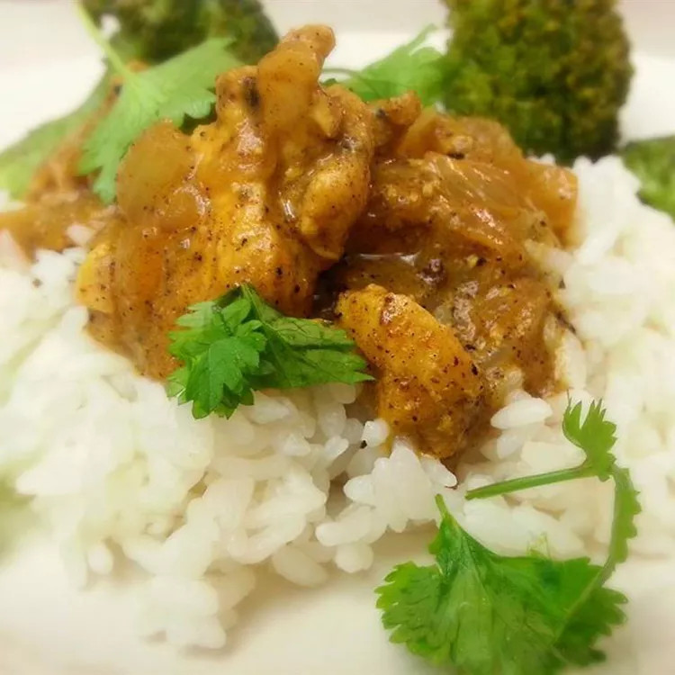

Indian chicken curry

A lovely meal from India
Indian chicken curry typically features chicken stewed in a tomato-based sauce seasoned with aromatic spices.
Ingredients
- 3 tablespoons olive oil
- 1 small onion, chopped
- 2 cloves garlic, minced
- 3 tablespoons curry powder
- 1 teaspoon ground cinnamon
- 1 teaspoon paprika
- 1 bay leaf
- ½ teaspoon grated fresh ginger root
- ½ teaspoon white sugar
- salt to taste
- 2 skinless, boneless chicken breast halves - cut into bite-size pieces
- 1 tablespoon tomato paste
- 1 cup plain yogurt
- ¾ cup coconut milk
- ½ lemon, juiced
- ½ teaspoon cayenne pepper
Steps
- Heat olive oil in a skillet over medium heat. Saute onion until lightly browned.
- Stir in garlic, curry powder, cinnamon, paprika, bay leaf, ginger, sugar and salt. Continue stirring for 2 minutes.
- Add chicken pieces, tomato paste, yogurt, and coconut milk. Bring to a boil, reduce heat, and simmer for 20 to 25 minutes.
- Remove bay leaf, and stir in lemon juice and cayenne pepper. Simmer 5 more minutes.